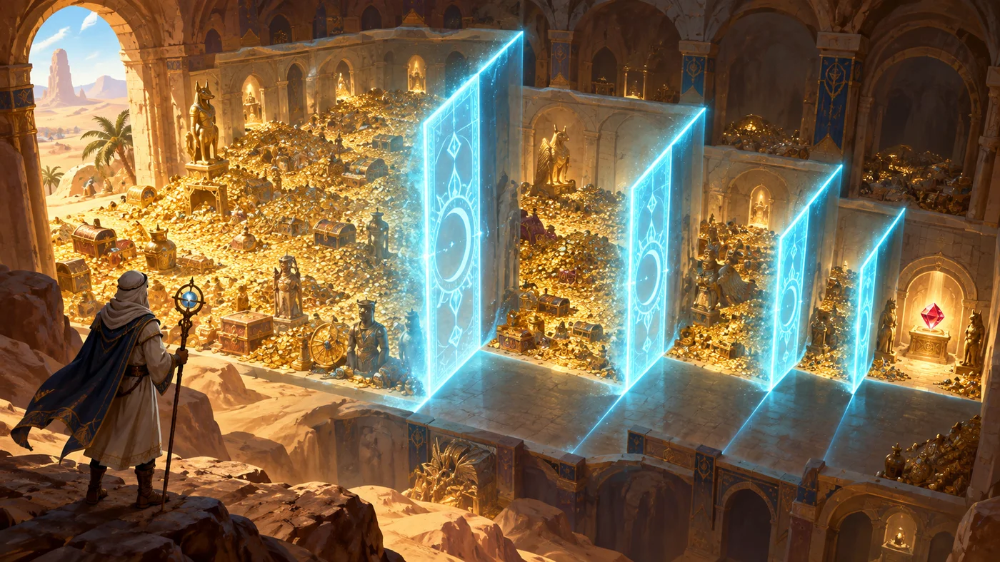
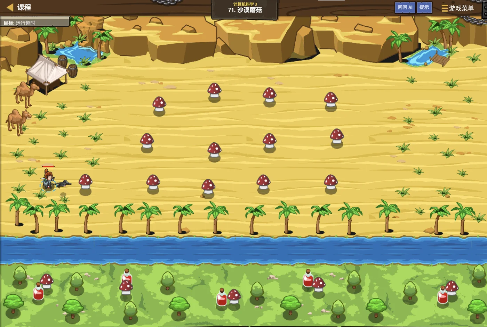

故事：沙丘上长着一排按高度排好的蘑菇，越往右越高。
塞尼克指着一朵：我要那朵刚好比我手掌高的。你几次能找到它？
你数了数，一排大约上千朵。心想：一个个看太慢了。
我每次都先看正中间那朵——高了就往左、矮了就往右。
对了。他点头，记住，这可是有前提的——它们得是按高度排好的。
扣哒考级 · GESP C++ 五级 · 第 5 单元 | 星砂绿洲 STARDUST OASIS
折半寻宝 二分查找与二分答案
Binary Search

塞尼克
沙海向导 · 你的向导
沙丘下埋着一排编好号的藏宝方尖碑，一共一千座。
塞尼克把沙漏往地上一放：答案在其中一座里。给你十次机会，猜得中吗？
你皱起眉头：一千座……一个个找，运气差要试一千次。
他笑了：可你有十次机会——足够把范围从一千缩小到一。
你忽然懂了：每次都砍掉一半。
塞尼克把沙漏往地上一放：答案在其中一座里。给你十次机会，猜得中吗？
你皱起眉头：一千座……一个个找，运气差要试一千次。
他笑了：可你有十次机会——足够把范围从一千缩小到一。
你忽然懂了：每次都砍掉一半。
塞尼克 · 沙海向导
这是五级里最"聪明"的一课。它教你怎么用"砍一半"的办法，把一百万次的工作变成二十次。
而且它不止能查东西——还能"猜答案"。后者叫二分答案，是竞赛里的大杀器。

assets/illustrations/py-L5-05-01_halving_vault.webp
【配图位】绿洲宝库内上千个编号格子层层排开向远处延伸，中央一格被抽出半截、透出微光；一名披沙色斗篷的向导站在通道中央，一手伸向左侧、一手伸向右侧，两侧格子的发光范围依次减半、越远越暗；沙地上画着一条从中间向外收敛的发光弧线。
0 单元导语与目标
Unit Overview
0.1 学习目标
1学完这个单元，你将能……
- 说清"猜数字"为什么用折半最快
- 写出标准的二分查找
- 处理"找第一个 / 最后一个"这类边界
- 算出二分需要多少步
- 说出二分查找的前提条件
- 用"二分答案"解决"最小能满足……"这类问题
2对标 GESP 考纲（C++ 五级）
- 理解二分查找的原理与适用前提
- 掌握二分查找的循环写法与边界处理
- 掌握
lower_bound/upper_bound的思想 - 理解二分答案的适用条件与实现步骤
- 考核目标：能判断二分代码的填空是否正确、能算出复杂度
0.2 考纲对照
| 本单元小节 | 对应考纲条目 | 真题常考形式 |
|---|---|---|
| 1 从猜数字说起 | 二分的直觉 | 为什么折半最快；几次能猜到 |
| 2 二分查找的思路 | 二分的原理 | 三个指针怎么移动；区间怎么缩 |
| 3 动手写二分 | 二分的实现与边界 | 横线处填 <= 还是 <（必考） |
| 4 二分的效率 | 时间复杂度 | n = 10⁶ 时大约要几步 |
| 5 二分答案 | 二分答案的思想 | 左右边界该怎么收 |
1 从猜数字说起
Guess the Number
1.1 一个一个猜太慢了
经典的猜数字游戏
TEXT
我心里想了一个 1 到 1000 之间的整数。
你每次猜一个数，我只会回答三个字之一：
太小了 太大了 猜对了
【笨办法】从 1 开始一个一个试
1 → 2 → 3 → 4 → ……
运气最差要猜 1000 次
【聪明办法】每次都猜"剩下范围的正中间"
第一次猜 500：
说"太小" → 答案在 501~1000（只剩 500 个数）
说"太大" → 答案在 1~499 （只剩 499 个数）
第二次再猜新范围的正中间……
每次都能把范围砍掉一半。关键差别
笨办法一次只排除 1 个数；折半法一次排除一半——这就是"质"的区别
1.2 每次都砍掉一半
1000 个数，10 次就够
TEXT
范围变化：
1000 → 500 → 250 → 125 → 63 → 32 → 16 → 8 → 4 → 2 → 1
↑
第 1 次 第 2 次 …… 第 10 次
数一数：一共砍了 10 刀，范围从 1000 缩到 1。
所以最多猜 10 次就一定能中。
换个角度算：
2^10 = 1024 ≥ 1000
所以 10 次就够（因为每次砍一半，相当于"除以 2"）
如果范围是 100 万呢？
2^20 = 1048576 ≥ 1000000
→ 20 次就够！
从 100 万次变成 20 次 —— 这就是二分的威力。结论 n 个数，二分只需要大约
1000 → 10 次；10⁶ → 20 次；10⁹ → 30 次
log₂n 次1000 → 10 次；10⁶ → 20 次；10⁹ → 30 次
打个比方：
二分就像查字典——你不会从第一页翻到最后一页。
你会翻到中间，看看要查的字在前面还是后面， 然后把没用的那一半整叠放下。
一本两千页的字典，二十次翻页之内就能找到任何一个字。
你会翻到中间，看看要查的字在前面还是后面， 然后把没用的那一半整叠放下。
一本两千页的字典，二十次翻页之内就能找到任何一个字。
2 二分查找的思路
How Binary Search Works
2.1 三个指针：l、r、mid
三个变量，一个循环
C++
int l = 0, r = n - 1; // l 和 r 圈出"还有可能的范围"
while (l <= r) {
int mid = l + (r - l) / 2; // ★ 取中间
if (a[mid] == x) return mid; // 找到了
if (a[mid] < x) l = mid + 1; // 答案在右半边 → 甩掉左半边
else r = mid - 1; // 答案在左半边 → 甩掉右半边
}
return -1; // 循环结束还没找到 → 不存在三个变量的分工
l 和 r 是"还剩哪些位置有可能"的两端；mid 是每次试探的中点
为什么 mid 要写成
如果 l 和 r 都很大（比如都是 10⁹ 量级），
而
这个技巧叫"防溢出取中点"，写二分时建议养成习惯。
l + (r - l) / 2？
写成 (l + r) / 2 看起来一样，但有个隐患：如果 l 和 r 都很大（比如都是 10⁹ 量级），
l + r 就可能超过 int 的上限，
变成负数——算出来的 mid 就完全跑偏了。而
l + (r - l) / 2 先做减法，
数字不会变大，就安全了。这个技巧叫"防溢出取中点"，写二分时建议养成习惯。
2.2 每一步砍掉一半
在有序数组里找 33
TEXT
数组（已升序）： 5 11 18 24 30 33 41 47 55 62 70
下标： 0 1 2 3 4 5 6 7 8 9 10
第 1 步：l=0，r=10 → mid=5 → a[5]=33 ← 正好是它！
一次就中了。
换个目标，找 47：
第 1 步：l=0，r=10 → mid=5 → a[5]=33 < 47 → l=6
现在范围缩到 [6, 10]（只剩 5 个数，砍掉一半）
第 2 步：l=6，r=10 → mid=8 → a[8]=55 > 47 → r=7
范围缩到 [6, 7]（只剩 2 个数）
第 3 步：l=6，r=7 → mid=6 → a[6]=41 < 47 → l=7
范围缩到 [7, 7]（只剩 1 个数）
第 4 步：l=7，r=7 → mid=7 → a[7]=47 ← 找到了！
一共 4 步。要是从头一个个找，得比 8 次。每一步都做同一件事
看 mid 上的值，决定"该留左半边还是右半边"——另一半直接扔掉
图 2（SVG）：二分查找——区间一路对半砍
assets/illustrations/py-L5-05-03_mid_pointer.webp
【配图位】一条很长的石制刻度尺横贯沙地，尺面上刻着连续编号；三根造型不同的发光指针插在尺上——最左一根与最右一根（深蓝）圈出一段被照亮的区间，正中间一根（金色，略高）指向某一段刻度；区间之外的刻度都已暗淡下去，一名披沙色斗篷的向导正把手放在中间那根指针上。
3 动手写二分
Writing Binary Search
3.1 标准写法
在一个升序数组里查找 x
C++
int binarySearch(int a[], int n, int x) {
int l = 0, r = n - 1; // 闭区间 [l, r]
while (l <= r) { // ★ 区间非空就继续
int mid = l + (r - l) / 2;
if (a[mid] == x) return mid; // 找到
else if (a[mid] < x) l = mid + 1; // 在右半边
else r = mid - 1; // 在左半边
}
return -1; // 没找到
}三个必须记住的细节
①
② 循环条件
③ 缩区间时
r = n - 1（闭区间，两端都取得到）；② 循环条件
l <= r（带等号，因为区间只剩一个元素时还要再比一次）；③ 缩区间时
mid + 1 / mid − 1（因为 mid 已经比过了，不用再放回区间）3.2 边界：最难的地方
二分的坑全在"边界"上。两种常见变体要分清。
变体一：左闭右闭
初始
变体二：左闭右开
初始
两种写法都对，但绝对不能混着用——混用就会死循环或者漏掉答案。
[l, r]初始
r = n − 1；循环 while (l <= r)；缩区间用 mid ± 1。变体二：左闭右开
[l, r)初始
r = n；循环 while (l < r)；缩区间用 l = mid + 1 和 r = mid。两种写法都对，但绝对不能混着用——混用就会死循环或者漏掉答案。
"找第一个大于 x 的位置"（upper_bound）
C++
int upperBound(const vector<int> &a, int x) {
int l = 0, r = (int)a.size(); // 左闭右开
while (l < r) {
int mid = l + (r - l) / 2;
if (__________________) { // ★ 横线处：a[mid] <= x
l = mid + 1;
} else {
r = mid;
}
}
return l; // 返回"第一个 > x"的位置
}横线上应该填
a[mid] <= x
因为我们要找的是"第一个大于 x 的"——所以"小于等于 x 的"全都不要，统统扔到左边去
怎么想清边界？抓住一句话：
"我正在找的那个东西，它满足什么条件？"
找"第一个 > x" → 满足条件的是
找"最后一个 ≤ x" → 满足条件的是
把"答案满足什么"想清楚，
找"第一个 > x" → 满足条件的是
a[mid] > x
→ 不满足（a[mid] <= x）的都在答案左边，全部丢掉。找"最后一个 ≤ x" → 满足条件的是
a[mid] <= x
→ 不满足的都在答案右边，往左收。把"答案满足什么"想清楚，
<= 还是 < 就自然出来了。
4 二分为什么这么快
Why So Fast
4.1 数一数要几步
| 数据规模 n | 逐个查找（最坏） | 二分查找（最坏） | 快了多少倍 |
|---|---|---|---|
| 1 000 | 1 000 次 | 10 次 | 100 倍 |
| 1 000 000 | 100 万次 | 20 次 | 5 万倍 |
| 1 000 000 000 | 10 亿次 | 30 次 | 3 千万倍 |
为什么是 log₂n？
因为每步都把范围除以 2。
从 n 开始，一直除以 2，除几次才到 1？——这就是"以 2 为底 n 的对数"，记作
所以二分查找的复杂度是
注意：这里的 log 通常不用写底数——因为在复杂度里，底数是常数，不影响量级。
对比一下：逐个查找是
从 n 开始，一直除以 2，除几次才到 1？——这就是"以 2 为底 n 的对数"，记作
log₂n。所以二分查找的复杂度是
O(log n)。注意：这里的 log 通常不用写底数——因为在复杂度里，底数是常数，不影响量级。
对比一下：逐个查找是
O(n)。当 n = 10⁶ 时，
n 是 100 万，而 log₂n 只有 20。
4.2 复杂度 O(log n)
二分的"快"有一个前提：数据必须是有序的。
二分靠的是"比一下就能判断答案在哪半边"——这只有在有序数组里才成立。
如果数组是乱的：
所以二分的完整前提是两条： ① 数据有序；② 能够随机访问（直接跳到 mid 去）。
第二条常常被忘掉： 单链表虽然是"有序"的，但要跳到 mid 得从头走 mid 步——二分就退化成了 O(n log n)， 还不如直接遍历。
如果数组是乱的：
a[mid] = 33，
你凭什么说答案不在左边？完全说不了。所以二分的完整前提是两条： ① 数据有序；② 能够随机访问（直接跳到 mid 去）。
第二条常常被忘掉： 单链表虽然是"有序"的，但要跳到 mid 得从头走 mid 步——二分就退化成了 O(n log n)， 还不如直接遍历。
一句话记住二分的前提：
"有序"+"能直接跳到中间"。
数组两条都满足；链表满足第一条、缺第二条——所以链表上不能直接套二分。
数组两条都满足；链表满足第一条、缺第二条——所以链表上不能直接套二分。
5 二分答案
Binary Search on Answer
5.1 什么叫"二分答案"
换个对象二分：不去数组里找，去"答案的可能范围"里找。
有一类题目长这样：
"求出满足某个条件的最小（或最大）的值。"
如果这个条件有个好性质—— "一旦某个值能满足，比它更大的（或更小的）就都能满足"——
那么答案就有"单调性"，就可以二分！
这时我们二分的不是数组下标，而是答案本身的取值范围。
"求出满足某个条件的最小（或最大）的值。"
如果这个条件有个好性质—— "一旦某个值能满足，比它更大的（或更小的）就都能满足"——
那么答案就有"单调性"，就可以二分！
这时我们二分的不是数组下标，而是答案本身的取值范围。
经典例子：最小载重量
TEXT
题目：把若干箱货物按原顺序分到 days 天里运完，
每天运连续的若干箱，求需要的"最小载重量"。
想清楚单调性：
载重量 = 10 吨 → 运不完（天数不够）
载重量 = 20 吨 → 运不完
载重量 = 30 吨 → 能运完 ✔
载重量 = 40 吨 → 也能运完 ✔
载重量 = 50 吨 → 更能运完 ✔
★ 一旦"能运完"，更大的载重量一定也能运完 —— 这就是单调性。
10 20 30 40 50 60
✘ ✘ ✔ ✔ ✔ ✔
↑
答案是第一个 ✔（也就是 30）
做法：在载重量的取值范围上二分 ——
猜一个 mid，写一个 check(mid) 判断"这么大够不够"
够 → 答案 ≤ mid，往左收
不够 → 答案 > mid，往右收关键
check(x) 必须具有单调性——
要么"一旦成立就一直成立"，要么"一旦不成立就一直不成立"5.2 判定函数与单调性
二分答案的固定骨架
C++
long long l = 最小的可能值; // 答案至少是这么大
long long r = 最大的可能值; // 答案至多是这么大
while (l < r) {
long long mid = l + (r - l) / 2;
if (check(mid)) {
r = mid; // ★ 够了 → 答案可能是 mid 或更小
} else {
l = mid + 1; // ★ 不够 → 答案一定比 mid 大
}
}
cout << l << endl; // l == r，就是答案两个方向要分清
找"最小能满足的" → 够了就
找"最大能满足的" → 够了就
r = mid，不够就 l = mid + 1；找"最大能满足的" → 够了就
l = mid，不够就 r = mid − 1（配合 mid = l + (r−l+1)/2）
为什么"够了"要写
当
而
一句话：丢掉的是"确定不是答案的"，留下的是"有可能的"。
r = mid 而不是 r = mid − 1？
因为我们找的是最小的能满足的值。当
mid 已经满足时，它自己有可能就是答案——
所以不能把它扔掉，只能把右边界收到它这里。而
mid 不满足时，它就一定不是答案，
可以放心地 l = mid + 1。一句话：丢掉的是"确定不是答案的"，留下的是"有可能的"。
assets/illustrations/py-L5-05-02_binary_answer.webp
【配图位】沙地上的魔法天平：左盘放着一块刻着数字的石头（表示本次猜测的答案值），右盘由一枚发光砝码与一个未知封印构成，天平倾向一侧并闪现出"可以 / 不可以"两种颜色的光；一旁沙面上画着一张范围不断收窄的图表，从两端向中间收敛；一名披沙色斗篷的向导俯身拨动天平的指针。
6 代码实战
Level Practice
关卡
沙漠蘑菇
进入关卡 →思路：数组已经升序，用二分查找定位目标， 每一步扔掉一半。

assets/stages/py-L5-05-stage1_desert_mushrooms.webp
【截图位】沙漠蘑菇关卡：沙丘上成排的可寻目标与选取点位同框，代码编辑区可见二分循环。
二分查找 + 统计比较次数
C++
#include <iostream>
using namespace std;
int a[1000005];
int main() {
int n, x;
cin >> n >> x;
for (int i = 0; i < n; i++) cin >> a[i];
int l = 0, r = n - 1, steps = 0, ans = -1;
while (l <= r) {
int mid = l + (r - l) / 2;
steps++; // 数一数比了几次
if (a[mid] == x) { ans = mid; break; }
else if (a[mid] < x) l = mid + 1;
else r = mid - 1;
}
cout << ans << " " << steps << endl;
return 0;
}输入 11 47 / 5 11 18 24 30 33 41 47 55 62 70
输出 7 4——在 11 个数里找 47，只比了 4 次
输出 7 4——在 11 个数里找 47，只比了 4 次
和本单元的关系：
把"比了几次"打印出来，是理解二分最快的办法。
建议你自己改一下数据规模试试： n = 11 时大约 4 次；n = 1000 时大约 10 次；n = 1000000 时大约 20 次。
你会发现一个惊人的事实：数据量翻一千倍，步数只多了 10 步左右。
因为 log 增长得极慢——这正是二分能在"十亿数据"上还能瞬间出结果的底气。
去扣哒世界闯这一关 →
建议你自己改一下数据规模试试： n = 11 时大约 4 次；n = 1000 时大约 10 次；n = 1000000 时大约 20 次。
你会发现一个惊人的事实：数据量翻一千倍，步数只多了 10 步左右。
因为 log 增长得极慢——这正是二分能在"十亿数据"上还能瞬间出结果的底气。
7 常见陷阱
Common Pitfalls

扣哒鸭 · 调试官
二分是"看着简单、写着容易死循环"的典型。四条。
1
对无序数组用二分。

扣哒鸭：二分的每一步都在做"既然 a[mid] 比目标小，答案就在右半边"这样的判断。
数组一乱，这个判断就不成立——它可能出现在任何地方。
用二分之前，先确认数据是有序的。
数组一乱，这个判断就不成立——它可能出现在任何地方。
用二分之前，先确认数据是有序的。
前提：数据必须有序
2
循环条件漏了等号，或者缩区间忘了 ±1。

扣哒鸭：左闭右闭写法里，
而缩区间如果写成
while (l <= r) 的等号不能少——
少了它，区间只剩一个元素时就直接跳过了，可能漏掉正确答案。而缩区间如果写成
l = mid 而不是 l = mid + 1，
mid 一直不动 → 死循环。闭区间写法：
while (l <= r) + mid ± 13
两种区间写法混着用。

扣哒鸭：左闭右闭配
左闭右开配
两套各自都对，但一旦混用——比如
r = n-1 + l <= r + mid ± 1；左闭右开配
r = n + l < r + r = mid。两套各自都对，但一旦混用——比如
r = n 配 l <= r——就会越界或死循环。建议：选定一套，从头到尾不改
4
以为二分只能用来"查数组"。

扣哒鸭：二分答案才是它真正的用武之地。
只要"答案的可行范围"有单调性，就能对着答案二分—— 再加上一个 check 函数就行。
而且二分答案里，初始的 l 和 r 常常不是 0 和 n，而是答案的最小可能值与最大可能值。
只要"答案的可行范围"有单调性，就能对着答案二分—— 再加上一个 check 函数就行。
而且二分答案里，初始的 l 和 r 常常不是 0 和 n，而是答案的最小可能值与最大可能值。
记牢：二分答案 = 二分的对象是"答案"，不是"下标"
8 题目练习
Practice
前 4 题改编自 C++ 五级真题，其余为原创练习题。
改编自 2026 年 9 月 · C++ 五级 · 第 9 题单选题
在升序数组中查找第一个严格大于 x 的元素位置，
下面代码中的横线应填写（ ）。
int upperBound(const vector<int> &a, int x) {
int l = 0, r = (int)a.size();
while (l < r) {
int mid = l + (r - l) / 2;
if (__________________) {
l = mid + 1;
} else {
r = mid;
}
}
return l;
}
A.
C.
a[mid] < x B.a[mid] >= xC.
a[mid] <= x D.a[mid] > x
查看答案与详解
答案：C。这个函数要找的是"第一个严格大于 x"的位置。
先把答案的特征想清楚：答案位置上的元素满足
那么"不满足"的元素是什么？就是
这些"不满足"的元素一定都在答案的左边——所以当
为什么不能选 A（
D 项写反了（那是在找"最后一个 ≤ x"）； B 项会把所有 ≥ x 的都推到右边，方向完全错。
一句话抓准："不满足答案条件的那些，统统扔掉。"
对应小节3.2 边界：最难的地方。
先把答案的特征想清楚：答案位置上的元素满足
a[pos] > x。那么"不满足"的元素是什么？就是
a[mid] <= x 的那些
（小于的、还有等于的）。这些"不满足"的元素一定都在答案的左边——所以当
a[mid] <= x 成立时，说明 mid 及其左边都不可能是答案，
可以放心地把左边界推到 l = mid + 1。为什么不能选 A（
a[mid] < x）？
差的那一点就是"等于 x 的情况"：
如果数组里有多个 x，A 会把 a[mid] == x 的位置也当成"答案候选"，
结果返回的是第一个 > x 的位置之前的某个位置——答案偏小。D 项写反了（那是在找"最后一个 ≤ x"）； B 项会把所有 ≥ x 的都推到右边，方向完全错。
一句话抓准："不满足答案条件的那些，统统扔掉。"
对应小节3.2 边界：最难的地方。
改编自 2026 年 9 月 · C++ 五级 · 第 10 题单选题
小杨需要把若干箱货物按原顺序分配到
days 天中，
每天运输连续的若干箱，求能够完成任务的最小载重量。
函数 check(cap) 判断载重量为 cap 时能否在规定天数内运完。
横线处应填写（ ）。long long l = maxWeight;
long long r = totalWeight;
while (l < r) {
long long mid = l + (r - l) / 2;
if (check(mid)) {
____________________
} else {
____________________
}
}
cout << l;
A.
B.
C.
D.
l = mid + 1; 和 r = mid;B.
r = mid; 和 l = mid + 1;C.
r = mid - 1; 和 l = mid;D.
l = mid; 和 r = mid - 1;
查看答案与详解
答案：B。题目求的是最小载重量——这就是"找最小的能满足的值"。
当
说明 mid 满足要求，而它自己有可能就是答案（因为我们要最小的）。 所以不能把它扔掉，只能把右边界收到这儿：
当
mid 这个值一定不是答案——它太小了。 所以可以放心地跳过它：
对应的是 B 项 ✔
A 项写反了——那是在求"最大能满足的值"（check 为真就往外扩）。
C、D 项都把
一条通用口诀： 查找"最小可行" → 可行就收右边界（
而且最后退出循环时
对应小节5.2 判定函数与单调性。
当
check(mid) 为真（这个载重量够用）：说明 mid 满足要求，而它自己有可能就是答案（因为我们要最小的）。 所以不能把它扔掉，只能把右边界收到这儿：
r = mid;当
check(mid) 为假（不够用）：mid 这个值一定不是答案——它太小了。 所以可以放心地跳过它：
l = mid + 1;对应的是 B 项 ✔
A 项写反了——那是在求"最大能满足的值"（check 为真就往外扩）。
C、D 项都把
mid 直接丢掉或原地不动，
要么漏掉答案，要么造成死循环。一条通用口诀： 查找"最小可行" → 可行就收右边界（
r = mid）；
查找"最大可行" → 可行就放左边界（l = mid）。而且最后退出循环时
l == r，就是答案——所以输出 l 即可。对应小节5.2 判定函数与单调性。
改编自 2026 年 9 月 · C++ 五级 · 判断题 第 6 题判断题
若数组
a 已按升序排列，下面函数能够返回
最后一个小于等于 x 的元素下标；如果不存在，则返回 -1。（ ）int findLastLE(const vector<int> &a, int x) {
int l = 0, r = (int)a.size() - 1;
int ans = -1;
while (l <= r) {
int mid = l + (r - l) / 2;
if (a[mid] <= x) {
ans = mid;
l = mid + 1;
} else {
r = mid - 1;
}
}
return ans;
}
查看答案与详解
答案：正确（√）。这段代码用的是"左闭右闭 + 记录答案"的写法，
逻辑完全正确。
逐步看：
①
②
③
验证：数组
满足
这种"用一个变量记下答案、一路找下去"的写法，是处理边界二分最不容易出错的套路。
相比"直接返回 l 或 r"的写法，它更直观——因为每一步"要不要记"写得很明确。
对应小节3.2 边界：最难的地方。
逐步看：
①
a[mid] <= x 时 ——
这个位置满足条件，于是记下来（ans = mid），
然后继续往右找（l = mid + 1），
因为我们要的是最后一个满足的。②
a[mid] > x 时 ——
这个位置太大，不满足，往左收（r = mid - 1）。③
ans 初值是 -1 ——
如果整个数组都比 x 大，一次都不会记录，正好返回 −1，符合题目要求。验证：数组
{5, 11, 18, 24, 30, 33}，x = 20 ——满足
≤ 20 的是 5、11、18，最后一个在下标 2，函数返回 2 ✔这种"用一个变量记下答案、一路找下去"的写法，是处理边界二分最不容易出错的套路。
相比"直接返回 l 或 r"的写法，它更直观——因为每一步"要不要记"写得很明确。
对应小节3.2 边界：最难的地方。
改编自 2026 年 6 月 · C++ 五级 · 判断题 第 7 题判断题
二分查找不仅可以应用于有序数组，也可以在不增加时间复杂度的情况下应用于有序的单链表，
因为链表也是有序的。（ ）
查看答案与详解
答案：错误（×）。"有序"只是二分的一个前提，另一个前提它没满足。
二分的每一步都要求"直接跳到中间去"——这叫随机访问。
数组能 O(1) 跳到中间（因为地址连续，可以直接算出
链表不能——想拿到第 mid 个结点，只能从头一个一个数过去，那本身就是 O(n)。
所以链表上"二分"的实际代价是： 外层 log n 次 × 每次都 O(n) 去找中点 =
而直接顺序遍历一遍链表只要
结论：二分的前提是"有序 + 支持随机访问"，两者缺一不可。 数组两条都满足；链表缺第二条，所以不能直接用二分。
（如果想在链表上做类似的事，通常得换数据结构，比如跳表——那是更高级的话题了。）
对应小节4.2 复杂度 O(log n)。
二分的每一步都要求"直接跳到中间去"——这叫随机访问。
数组能 O(1) 跳到中间（因为地址连续，可以直接算出
a[mid] 在哪儿）；链表不能——想拿到第 mid 个结点，只能从头一个一个数过去，那本身就是 O(n)。
所以链表上"二分"的实际代价是： 外层 log n 次 × 每次都 O(n) 去找中点 =
O(n log n)。而直接顺序遍历一遍链表只要
O(n)——
二分反而更慢了，"不增加时间复杂度"是错的。结论：二分的前提是"有序 + 支持随机访问"，两者缺一不可。 数组两条都满足；链表缺第二条，所以不能直接用二分。
（如果想在链表上做类似的事，通常得换数据结构，比如跳表——那是更高级的话题了。）
对应小节4.2 复杂度 O(log n)。
原创练习题单选题
在一个长度为
10⁶ 的升序数组中用二分查找找某个元素，
最多需要比较大约多少次（ ）。A.
10 次 B.20 次 C.1000 次 D.1000000 次查看答案与详解
答案：B。二分的比较次数约为
手算一下：每比较一次，范围就除以 2。
因为
A 项（10 次）是
C、D 项都是"逐个查找"的量级， 和二分完全不是一个数量级。
记住这组对应关系很有用：
数据量翻一千倍，步数只多 10 步——这就是 log 增长的"慢"。
对应小节4.1 数一数要几步。
log₂n。手算一下：每比较一次，范围就除以 2。
10⁶ → 5×10⁵ → 2.5×10⁵ → …… → 1，
总共砍多少刀？因为
2²⁰ = 1048576 ≥ 10⁶，所以 20 次足够把范围从一百万缩到 1。A 项（10 次）是
2¹⁰ = 1024 的量级，
对应的是"一千左右"的数据规模，对一百万来说不够。C、D 项都是"逐个查找"的量级， 和二分完全不是一个数量级。
记住这组对应关系很有用：
10³ → 约 10 次；
10⁶ → 约 20 次；
10⁹ → 约 30 次。数据量翻一千倍，步数只多 10 步——这就是 log 增长的"慢"。
对应小节4.1 数一数要几步。
原创练习题判断题
"二分答案"要求判定函数具有单调性——
即存在一个分界点，分界点一侧的所有值都满足条件，另一侧的所有值都不满足。（ ）
查看答案与详解
答案：正确（√）。单调性是二分答案能够成立的唯一理由。
为什么必须有它？因为二分的每一步都在做这样的推理：
"如果 mid 满足条件，那么答案一定不在 mid 的这一侧。"
如果没有单调性，"mid 满足"这件事就说明不了任何问题—— 答案可能在这边，也可能在那边，二分就彻底失灵了。
举个有单调性的例子（最小载重量）：
载重量 10 吨运不完、20 吨运不完、30 吨能运完、40 吨也能运完……
一旦"能运完"，更大的载重量必然也能运完——这就是单调性。
再举个没有单调性的例子：
"求一个数，使它的约数个数最多"——约数个数随数值忽多忽少，毫无规律， 根本没有分界点，因此不能二分答案。
所以拿到一道"求最小/最大的满足值"的题时，第一件事就是问自己： "这个条件有单调性吗？"
对应小节5.1 什么叫"二分答案"。
为什么必须有它？因为二分的每一步都在做这样的推理：
"如果 mid 满足条件，那么答案一定不在 mid 的这一侧。"
如果没有单调性，"mid 满足"这件事就说明不了任何问题—— 答案可能在这边，也可能在那边，二分就彻底失灵了。
举个有单调性的例子（最小载重量）：
载重量 10 吨运不完、20 吨运不完、30 吨能运完、40 吨也能运完……
一旦"能运完"，更大的载重量必然也能运完——这就是单调性。
再举个没有单调性的例子：
"求一个数，使它的约数个数最多"——约数个数随数值忽多忽少，毫无规律， 根本没有分界点，因此不能二分答案。
所以拿到一道"求最小/最大的满足值"的题时，第一件事就是问自己： "这个条件有单调性吗？"
对应小节5.1 什么叫"二分答案"。
原创练习题编程题
题目要求：读入一个长度为
样例：输入
n 的升序数组
和一个目标值 x，用二分查找找出 x
第一次出现的下标（下标从 0 开始）；如果 x 不存在，输出 -1。样例：输入
6 30 / 5 11 30 30 30 33，
输出 2。查看参考答案与要点
#include <iostream>
using namespace std;
int a[1000005];
int main() {
int n, x;
cin >> n >> x;
for (int i = 0; i < n; i++) cin >> a[i];
int l = 0, r = n - 1, ans = -1;
while (l <= r) {
int mid = l + (r - l) / 2;
if (a[mid] == x) {
ans = mid; // ★ 先记下来
r = mid - 1; // ★ 继续往左找，看还有没有更靠前的
} else if (a[mid] < x) {
l = mid + 1;
} else {
r = mid - 1;
}
}
cout << ans << endl;
return 0;
}
输入 6 30 / 5 11 30 30 30 33 输出：2
要点：
① 这题的关键不是"找到"，而是"找到最靠前的那个"。
所以命中之后不能直接 return，而要记下来、继续往左边找。；
② ans 初值取 -1，
正好对应"不存在"的输出要求——一行都不用额外处理；
③ 命中后写 r = mid - 1（不是 return，也不是 l）——
因为我们要最小的下标，左边还可能藏着更靠前的一个。；
④ 这个"用一个变量记答案"的套路，
是处理一切"第一个/最后一个满足条件"问题的通用写法，
比直接返回 l 或 r 好理解得多；
⑤ 数组开在全局、大小比数据上限略大一点，是防越界的常规做法。
对应小节3.2 边界：最难的地方。
9 本单元小结
Unit Summary
塞尼克 · 沙海向导
四句话记住二分：一、每次都猜正中间，一下砍掉一半——100 万个数只要 20 次。
二、三个变量：
l、r 圈范围，mid 试探；
mid 写成 l + (r - l) / 2 防溢出。三、前提有两条：
有序 + 能直接跳到中间；链表缺第二条，套不了。四、二分答案：找"最小可行"就
r = mid，找"最大可行"就 l = mid。宝藏挖到了。下一站是回音螺旋——那里每一道弯里，都套着一道更小的同样的弯。
你在折半寻宝中收获了什么
- 折半的直觉——每次猜正中间，一步排除一半。
- 步数——约
log₂n次；10³ → 10、10⁶ → 20、10⁹ → 30。 - 三个变量——
l、r圈出可能范围，mid是试探点。 - 防溢出取中点——写
l + (r - l) / 2，不要写(l + r) / 2。 - 左闭右闭写法——
r = n − 1、while (l <= r)、mid ± 1。 - 左闭右开写法——
r = n、while (l < r)、l = mid + 1/r = mid；两套不能混用。 - 边界怎么想——"答案满足什么条件？不满足的统统扔掉。"
- 通用套路——用一个变量记住答案，命中后继续往目标方向找。
- 二分的两个前提——数据有序 + 支持随机访问，缺一不可。
- 链表为什么不行——找中点本身就要 O(n)， 整体退化成 O(n log n)，比直接遍历还慢。
- 二分答案——二分对象是"答案的取值范围"，前提是判定函数有单调性。
- 收边界的方向——找最小可行：
r = mid； 找最大可行：l = mid。 - 循环结束时——
l == r，就是答案。
下一站：回音螺旋
绿洲岩壁上有一道螺旋通道——每一圈里都套着一圈更小的同样的螺旋，
回声一层层向内传递、越收越紧。
下一单元我们学递归算法：
怎么让一个函数"自己调用自己"，把一个大问题拆成同样形状的小问题。